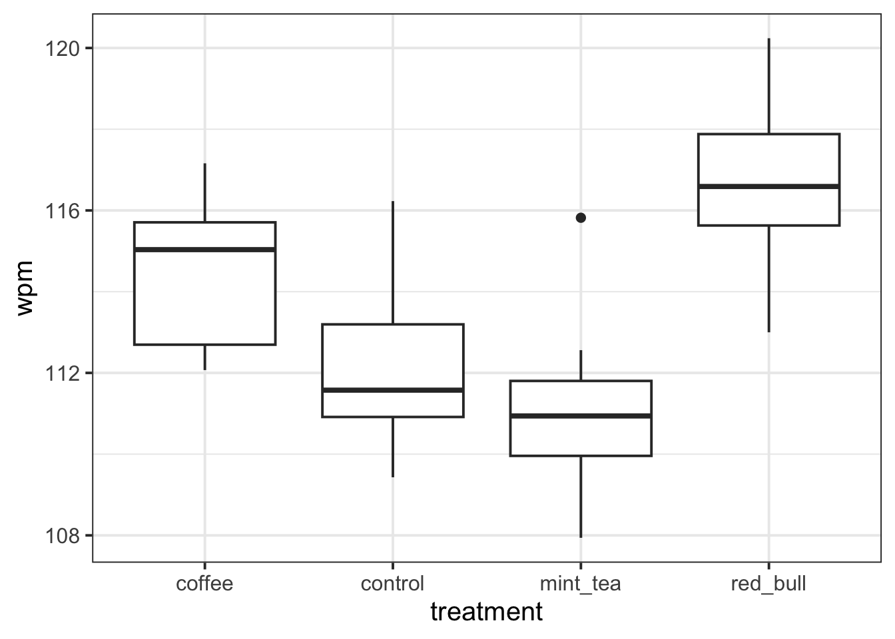
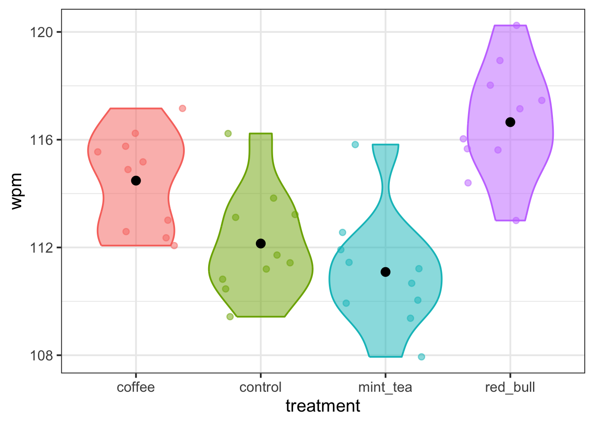
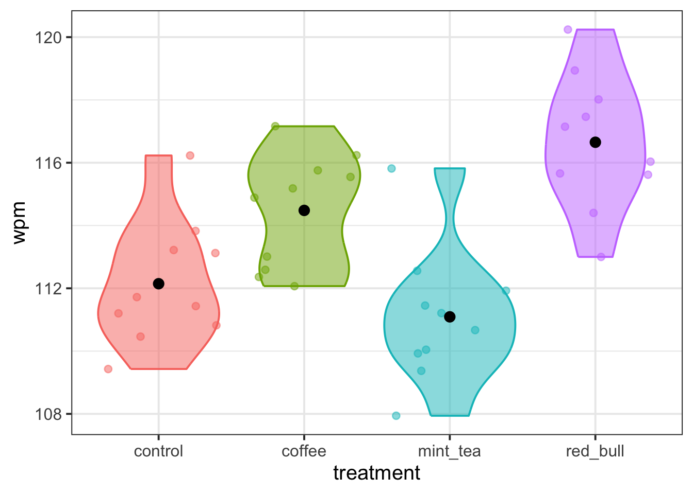

| variable | description |
|---|---|
| treatment | which one of four treatment conditions the participant was assigned - control (water), coffee, mint tea, or red bull |
| wpm | average number of words typed per minute |
06: Treatment coding
This week, you’ll practice implementing and interpreting a treatment-coded categorical predictor with four levels.
NoteGet set up
- Open RStudio.
- Create a new .Rmd file for this week’s exercises.
- Save it somewhere you can find it again.
- Give it a clear name (for example,
dapr2_lab06.Rmd). - In the first code chunk, load the packages you’ll need this week (and install them if you don’t have them already):
tidyverse
To investigate if the number of words typed per minute (WPM) differs between people who’ve consumed different kinds of beverages, the researchers conducted an experiment where 40 participants were each randomly allocated to one of four beverage conditions.
The data in caffeinedrink.csv contained two attributes collected from \(n=40\) participants:
q1
Question 1
Read in the data from https://uoepsy.github.io/data/caffeinedrink.csv and store it in a variable named wpm_data.
wpm_data <- read_csv("https://uoepsy.github.io/data/caffeinedrink.csv")
q2
Question 2
A quick-and-dirty way to plot a numeric outcome as a function of a categorical predictor is a boxplot:
wpm_data |>
ggplot(aes(x = treatment, y = wpm)) +
geom_boxplot()
But boxplots aren’t great, because the way they summarise the data can often misrepresent how the data is actually distributed. Also, they show the median by default, whereas in linear modelling, we are usually focused on the means.
A better style of plot for this purpose is a violin plot (a kind of vertical density plot, which shows the overall distribution more faithfully) with jittered points (so that we can see each actual observed data point) and superimposed group means.
To create a violin plot that shows how wpm varies based on beverage treatment, copy the following code template and replace the ... bits with the appropriate variable names.
... |>
ggplot(aes(x = ..., y = ..., fill = ..., colour = ...)) +
geom_violin(alpha = 0.5) +
geom_jitter(alpha = 0.5) +
stat_summary(fun = mean, geom = 'point', colour = 'black', size = 3) +
theme(legend.position = 'none') +
NULL
wpm_data |>
ggplot(aes(x = treatment, y = wpm, fill = treatment, colour = treatment)) +
geom_violin(alpha = 0.5) +
geom_jitter(alpha = 0.5) +
stat_summary(fun = mean, geom = 'point', colour = 'black', size = 3) +
theme(legend.position = 'none') +
NULL
q3
Question 3
Which of the four levels of treatment do you think would be a suitable reference level? Write down briefly why you think so.
🗂️ See TODO flash cards.
I’d make the reference level the control level, which represents people just drinking water.
This is an appropriate reference level because we can think of water as the “default” or “baseline” beverage, compared to the other beverages coffee, mint tea, and red bull.
q4
Question 4
Based on the reference level you chose above, you’ll now try to predict what the contrast matrix for the treatment variable will look like. (You’ll get R to generate the actual contrast matrix later, and you can check your predictions then.)
Here is a Markdown table and the code that produced it. Copy the code to your own Rmd file, fill in the column names with the appropriate levels of treatment, and fill in the other empty cells with 0s and 1s as appropriate:
| … | … | … | |
|---|---|---|---|
coffee |
… | … | … |
control |
… | … | … |
mint_tea |
… | … | … |
red_bull |
… | … | … |
The code:
| | ... | ... | ... |
| ---------- | --- | --- | --- |
| `coffee` | ... | ... | ... |
| `control` | ... | ... | ... |
| `mint_tea` | ... | ... | ... |
| `red_bull` | ... | ... | ... |🗂️ See TODO flash cards.
If the reference level is control, then we know a couple things:
- the columns, which represent the three dummy variables, will be named after the other three levels;
- the row labelled
controlwill be filled with 0s all the way across.
coffee |
mint_tea |
red_bull |
|
|---|---|---|---|
coffee |
… | … | … |
control |
0 | 0 | 0 |
mint_tea |
… | … | … |
red_bull |
… | … | … |
Further, each of the non-reference level rows will contain a 1 in the column with the same name.
coffee |
mint_tea |
red_bull |
|
|---|---|---|---|
coffee |
1 | … | … |
control |
0 | 0 | 0 |
mint_tea |
… | 1 | … |
red_bull |
… | … | 1 |
And finally, every remaining ... will be replaced by a 0.
coffee |
mint_tea |
red_bull |
|
|---|---|---|---|
coffee |
1 | 0 | 0 |
control |
0 | 0 | 0 |
mint_tea |
0 | 1 | 0 |
red_bull |
0 | 0 | 1 |
Here’s the code for the finished Markdown table:
| | `coffee` | `mint_tea` | `red_bull` |
| ---------- | -------- | ---------- | ---------- |
| `coffee` | 1 | 0 | 0 |
| `control` | 0 | 0 | 0 |
| `mint_tea` | 0 | 1 | 0 |
| `red_bull` | 0 | 0 | 1 |
q5
Question 5
Use mutate() to convert treatment into a factor and reorder the levels so that your chosen reference level comes first.
Then, run the following code to produce the contrast matrix:
contrasts(wpm_data$treatment)Did your predictions match this output? (Don’t worry if the rows are in a different order! Just pay attention to the column names and where the 0s and 1s are placed.)
wpm_data <- wpm_data |>
mutate(
treatment = factor(treatment, levels = c('control', 'coffee', 'mint_tea', 'red_bull'))
)
contrasts(wpm_data$treatment) coffee mint_tea red_bull
control 0 0 0
coffee 1 0 0
mint_tea 0 1 0
red_bull 0 0 1(Note: The rows are in a different order than in the Markdown table above because they are shown in the order of factor levels, which we just modified.)
q6
Question 6
Write the mathematical model formulation for the model that we’re about to fit, using the dummy variables identified above.
🗂️ See TODO flash cards.
\[ \text{WPM} = \beta_0 + (\beta_1 \cdot \text{Treatment}_\text{Coffee}) + (\beta_2 \cdot \text{Treatment}_\text{Red Bull}) + (\beta_3 \cdot \text{Treatment}_\text{Mint Tea}) + \epsilon \]
Write:
$$
\text{WPM} = \beta_0 +
(\beta_1 \cdot \text{Treatment}_\text{Coffee}) +
(\beta_2 \cdot \text{Treatment}_\text{Red Bull}) +
(\beta_3 \cdot \text{Treatment}_\text{Mint Tea}) +
\epsilon
$$If you want line breaks mid-expression but still keep everything nicely aligned, try this:
\[ \begin{align} \text{WPM} ~=~& \beta_0 + (\beta_1 \cdot \text{Treatment}_\text{Coffee}) + (\beta_2 \cdot \text{Treatment}_\text{Red Bull}) + \\ & (\beta_3 \cdot \text{Treatment}_\text{Mint Tea}) + \epsilon \end{align} \]
Write:
\begin{align}
\text{WPM} ~=~& \beta_0 + (\beta_1 \cdot \text{Treatment}_\text{Coffee}) + (\beta_2 \cdot \text{Treatment}_\text{Red Bull}) ~ + \\
& (\beta_3 \cdot \text{Treatment}_\text{Mint Tea}) + \epsilon
\end{align}Note that the following mathematical model formulation is incorrect because it does not contain any dummy variables and therefore has too few \(\beta\) coefficients. (The number of \(\beta\)s in the equation should always match the number of coefficients produced by the model summary.)
\[ \text{WPM} = \beta_0 + (\beta_1 \cdot \text{Treatment}) + \epsilon \]
q7
Question 7
You’ve now chosen a reference level and identified the dummy variables that the model will estimate.
The model will have four coefficients: one intercept and three slopes which each compare one of the non-reference levels back to the reference level.
Based on the plot you created back in Q2, write down your best guess about the approximate value that each of the model’s four coefficients will have. (After you fit the model later, you’ll check your predictions.)
🗂️ See TODO flash cards.
For convenience, here’s the plot again:
wpm_data |>
ggplot(aes(x = treatment, y = wpm, fill = treatment, colour = treatment)) +
geom_violin(alpha = 0.5) +
geom_jitter(alpha = 0.5) +
stat_summary(fun = mean, geom = 'point', colour = 'black', size = 3) +
theme(legend.position = 'none') +
NULL
The four coefficients will be:
(Intercept)\(\beta_0\):- The mean of the reference level
control, which appears to be about 112 WPM.
- The mean of the reference level
treatmentcoffee\(\beta_1\):- WPM for
coffeeminus WPM forcontrol(i.e., the difference betweencoffeeandcontrol), which appears to be a bit less than 3 WPM.
- WPM for
treatmentmint_tea\(\beta_2\):- The difference between
mint_teaandcontrol, which appears to be about –1 WPM.
- The difference between
treatmentred_bull\(\beta_3\):- The difference between
red_bullandcontrol, which appears to be just under 5 WPM.
- The difference between
q8
Question 8
Now fit the model in R and check the model summary. Were your predictions about the coefficients correct?
If they were, celebrate! If not, can you figure out how you can update your thinking to better match the results?
🗂️ See TODO flash cards.
wpm_m1 <- lm(wpm ~ treatment, data = wpm_data)
summary(wpm_m1)
Call:
lm(formula = wpm ~ treatment, data = wpm_data)
Residuals:
Min 1Q Median 3Q Max
-3.652 -1.362 -0.151 1.125 4.729
Coefficients:
Estimate Std. Error t value Pr(>|t|)
(Intercept) 112.1460 0.6402 175.179 < 2e-16 ***
treatmentcoffee 2.3350 0.9053 2.579 0.0141 *
treatmentmint_tea -1.0550 0.9053 -1.165 0.2516
treatmentred_bull 4.5060 0.9053 4.977 1.61e-05 ***
---
Signif. codes: 0 '***' 0.001 '**' 0.01 '*' 0.05 '.' 0.1 ' ' 1
Residual standard error: 2.024 on 36 degrees of freedom
Multiple R-squared: 0.5563, Adjusted R-squared: 0.5194
F-statistic: 15.05 on 3 and 36 DF, p-value: 1.651e-06
q9
Question 9
For these last two questions, imagine changing the reference level to coffee (or if you already used coffee as your reference level, imagine changing it to something else).
If the reference level were updated to coffee, what would the model’s coefficients be estimating?
Using the plot again, visually estimate the approximate value of all four model coefficients.
For convenience, here’s the plot again:
wpm_data |>
ggplot(aes(x = treatment, y = wpm, fill = treatment, colour = treatment)) +
geom_violin(alpha = 0.5) +
geom_jitter(alpha = 0.5) +
stat_summary(fun = mean, geom = 'point', colour = 'black', size = 3) +
theme(legend.position = 'none') +
NULLThe four coefficients will be:
(Intercept):- The mean of the reference level
coffee, which appears to be just above 114 WPM.
- The mean of the reference level
treatmentcontrol:- WPM for
controlminus WPM forcoffee(i.e., the difference betweencontrolandcoffee), which appears to be between –2 and –3.
- WPM for
treatmentmint_tea:- The difference between
mint_teaandcoffee, which appears to be a bit less than –4 WPM.
- The difference between
treatmentred_bull:- The difference between
red_bullandcoffee, which appears to be about 2 WPM.
- The difference between
q10
Question 10
Change the reference level of treatment to coffee and generate the contrast matrix to verify that coffee is the reference level. Then re-fit the model and check the model summary.
Were your predictions from Q9 supported? Why or why not?
Optional but recommended: After checking your predictions, write a little guide for yourself, in your own words, about how to interpret treatment-coded predictors.
wpm_data <- wpm_data |>
mutate(
treatment = factor(treatment, levels = c('coffee', 'control', 'mint_tea', 'red_bull'))
)
contrasts(wpm_data$treatment) control mint_tea red_bull
coffee 0 0 0
control 1 0 0
mint_tea 0 1 0
red_bull 0 0 1Good! coffee is the reference level. We can tell because it’s got 0s all the way across its row.
wpm_m2 <- lm(wpm ~ treatment, data = wpm_data)
summary(wpm_m2)
Call:
lm(formula = wpm ~ treatment, data = wpm_data)
Residuals:
Min 1Q Median 3Q Max
-3.652 -1.362 -0.151 1.125 4.729
Coefficients:
Estimate Std. Error t value Pr(>|t|)
(Intercept) 114.4810 0.6402 178.827 < 2e-16 ***
treatmentcontrol -2.3350 0.9053 -2.579 0.014138 *
treatmentmint_tea -3.3900 0.9053 -3.744 0.000631 ***
treatmentred_bull 2.1710 0.9053 2.398 0.021795 *
---
Signif. codes: 0 '***' 0.001 '**' 0.01 '*' 0.05 '.' 0.1 ' ' 1
Residual standard error: 2.024 on 36 degrees of freedom
Multiple R-squared: 0.5563, Adjusted R-squared: 0.5194
F-statistic: 15.05 on 3 and 36 DF, p-value: 1.651e-06